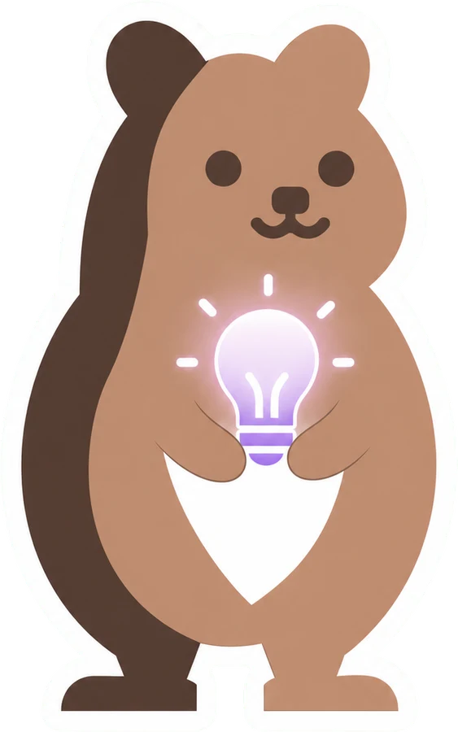

학생에게
"브루는 말한 걸 글자로 받아 적어요. 글자를 지우면 그 부분 영상도 같이 잘려요. 그러니까 편집은 글자 지우기부터예요."
1차시 · 25분 브루 시작하기
실제 브루 편집기 화면(웹 Vrew 4.6.3 데모 프로젝트)을 그대로 따라가요. 자막 자동 생성과 텍스트 컷 편집이라는 두 원리만 익히면, 스마트폰으로 찍은 1분 영상이 자막 완성본으로 바뀌어요.
브루 상단 탭 다섯 개 · 8문항
"브루는 말한 걸 글자로 받아 적어요. 글자를 지우면 그 부분 영상도 같이 잘려요. 그러니까 편집은 글자 지우기부터예요."

"자막 칸에 [··] 표시가 보이면 아무 말도 없는 구간이에요. 편집 탭의 무음 구간 줄이기를 누르면 한 번에 정리돼요."

"무료 계정도 자막·내보내기는 무제한이에요. 다만 음성 분석이 월 200분이고 영상 끝에 브루 워터마크가 붙어요. 학교 단위는 교육기관 20% 할인이 있고요."

"웹 브루 체험판은 크롬에서만 열리고 내보내기가 막혀 있어요. 연수 전에 데스크톱 앱 설치(맥·윈도우·우분투)와 회원가입까지 끝내 두게 안내해 주세요."
2026. 9. 25 확인